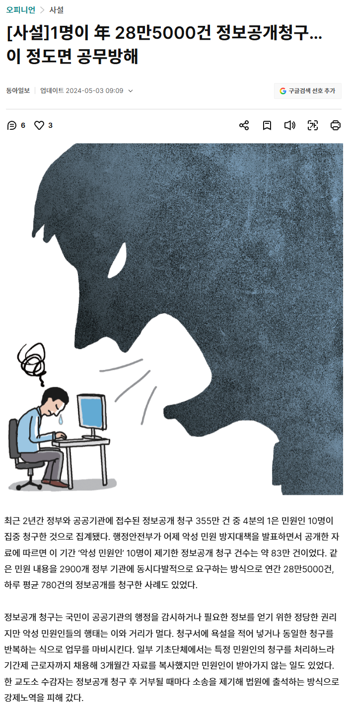
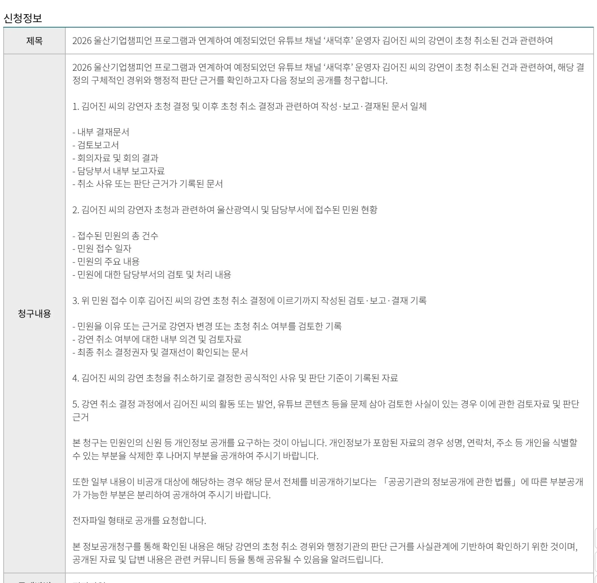

[사설]1명이 年 28만5000건 정보공개청구… 이 정도면 공무방해｜동아일보
정보공개청구를 통해 공무원에게 부담을 주려면,
특정 사안에 대해 몇년치 기록을 전부 청구하거나 정보를 복잡한 형태로 가공해서 제공하도록 요구하는 등 양이 방대하고 처리에 상당한 행정력이 소요되는 수준이어야 함

5개 항목에 대한 정보공개요청이 '공무원 죽이기'라고? ㅋㅋㅋㅋㅋㅋㅋㅋㅋㅋㅋㅋ

[사설]1명이 年 28만5000건 정보공개청구… 이 정도면 공무방해｜동아일보
정보공개청구를 통해 공무원에게 부담을 주려면,
특정 사안에 대해 몇년치 기록을 전부 청구하거나 정보를 복잡한 형태로 가공해서 제공하도록 요구하는 등 양이 방대하고 처리에 상당한 행정력이 소요되는 수준이어야 함

5개 항목에 대한 정보공개요청이 '공무원 죽이기'라고? ㅋㅋㅋㅋㅋㅋㅋㅋㅋㅋㅋㅋ
댓글
수집 당시 댓글 48개
게이트 · 1 일 전
전장연이랑 비교하는거보니 전장연이 하는짓이 합법인지 불법인지 구별조차 못하는 저능아 새끼로군요
피고름비빔밥 · 7 시간 전
전장연이 하는짓이 만약에 합법이라고 치면 뭐가 바뀌냐 합법이면 시민들 길막아도 되는 거였어? 그럼 캣맘은 합법인데 왜 욕을 하니? 캣맘들이 밥주는거 : 합법, 강연 못하게 민원넣은거 : 합법 인데 왜 화가 난거야 비유라는건 당연히 100%일치하는게 있을 수 없고 포인트만 이해하면 되는 거야 불법합법이 아니라 제3자의 고통을 무시한다는게 포인트란다 꼭 이렇게 내용에 반박을 못하니 이상한 소리하는 애들이 있지 저능아라는 소리하는 거 보니 지가 똑똑한 줄 알고 있는거까지 너의 열등감과 초라함이 보인다
오늘도어제같이 · 23 시간 전
다 읽어 보니 공개 요청 해도 될 사인인데? 아니 개인 회사도 아니고 공무 인데 적법하게 보겠다 하면 봐야지. 힘들면 적법하게 규정을 바꿔 달라고 하던가 힘든거 요구 하는 새끼가 나쁜 새끼지 이지랄 하고 있냐?
피고름비빔밥 · 7 시간 전
말단 공무원이 어떻게 규정을 바꾸냐 공직사회라는게 말같지도 않은 외부민원에는 껌뻑 죽지만 내부 공무원이 아무리 절박하게 요청해도 신경이나 쓰는줄 알아? 국민신문고랑 정보공개때문에 얼마나 많은 공무원이 자살을 했는데 몇십년동안 뭐가 바뀐게 있어? 그래 너말대로 일반 시민의 적법한 권리니까 정보공개 할수 있다 치자 그럼 캣맘들의 모든 행동도 적법한데 너는 왜 화가 난거냐? '힘들면 적법하게 규정을 바꿔 달라고 해야지' 왜 관련도 없는 정보공개를 하는거냐고
이라기시따 · 1 일 전
피고름비빔밥 · 1 일 전
강연취소는 윗세대가 한게 맞는데 정보공개 처리는 너랑 똑같은 말단 2030이 한단다
불멸의러너 · 1 일 전
ㅇㄱㄹㅇ
얼린계란 · 1 일 전
쯧, 지만 잘났지 쯧쯧
오메가팡 · 1 일 전
민원받는 공무원 개인도 사람이다. 배달하는 사람도 사람이야. 그 일한다고 월급타잖아 하고 넘기면 너도 나중에 니 직업이 어떤 대우를 받아도 할말없을거야
dagdha · 1 일 전
공무원 죽이기는 무슨... 이렇게 억울한 일 당했을 때 하라고 만든게 정보공개청구 제도임.
BeanieKSB · 1 일 전
정보공개가 공무원 주요 업무가 아니기도 하거니와, 뚝딱하면 나오는 게 아님. 가공해야 하는 정보도 있음. 아마 핀포인트로 적시하는 거 아니면 부존재로 나갈 수도 있을 걸
닉볼때마다케겔운동 · 1 일 전
한가지 정보를 여러명이 청구한다. : 부담적음 의미없이 말꼬리 잡으며 계속 민원을 이어간다 : 행정력 낭비 쓸모없는 여러개의 정보를 한명이 의미없이 계속 청구한다. : 행정력 낭비
두둠칫둠ㅅ · 1 일 전
병신
원천성일 · 1 일 전
그래서 충분히 공개가 가능한 정보는 공공데이터포털에 따로 올라가있긴 함
해물파전 · 1 일 전
하이랄 · 1 일 전
자동화 해 아니면 애초에 공개 해 놔
BeanieKSB · 1 일 전
자동화가 불가능한 영역임. DB로 갖춰두지 않은 영역이나 전산화되기 전 수기로 작성된 자료 같은 거는 그걸 가공하는 것도 시간이 소요되고, 엄청 오래된 서류는 당시 있었을 게 확실함에도 국가기록관에 이관되어서 없다던지, 아니면 멸실 및 분실된 경우도 많음. 그리고 공개할 정보 중 적절한 정보는 애초에 사전공개 해 놓고 있음. 니가 관심이 없으니까 없는 줄 알지
하이랄 · 1 일 전
어차피 정보공개 요청하면 공개 해줄내용 다 전산에 올려서 미리미리 조회 가능 하게 해놔 정보공개 요청해도 답 못해주는거 빼고 수동은 되는게 자동은 불가능할리가 있냐 안하는거지
BeanieKSB · 1 일 전
정보공개가 자주 들어올 만한 내용은 이미 스캔했거나 전산화된 상태로 보관 중임. 근데 정보공개가 어떤 범위로 어떤 내용으로 들어올지 일일이 대응하는 건 어느 기관도 불가능함. 그래서 자동화가 불가능하다고 말하는 건데 귓등으로 듣니
산업핵폐기물 · 1 일 전
뭘로할까고민이다 · 1 일 전
요즘 공기관 RAG시스템 도입하는 중이다. 정보공개도 자동화가 가능하다. 대부분 내부용 RAG 도입 후, 외부 공개용까지 생각 중이다.
x0은0 · 1 일 전
뭘 요청할지 알고 공개를 해. 얻는 득보다 실이 커
분리수거함 · 1 일 전
정보공개청구해도 특정인의 이익 불이익 이딴 시덥잖은걸로 거부하고 안보여주면서 뭔 방해?
건축학도덕 · 1 일 전
와우
메롱메롱메로나 · 1 일 전
우선 저 정보공개청구 취지는 합당함 다만, 항목이 중복임 1번. 강연 취소 검토 및 결정 관련 공문 2번. 관련 민원 내역, 통계 이렇게만 하면됨 내용 보면 1번과 345번이 다 중복되느니 내용이고 겹쳐있음 저러면 1번과 345번 같은 내용으로 답변하면 성의없다고 뭐라 할 가능성도 높지 굳이 간단히 줄일 수 있는 말은 늘려서 하지 말자
시나몬롤 · 15 시간 전
애초에 gpt 딸깍 청구라서 그런듯
Hacknodab · 1 일 전
저런거 한두개는 상관없지 근데 과연 몇건이나 들어갔을까 내가 볼땐 이 정도 이슈터졌음 수백건 들어왔다 캣맘쪽이랑 반대쪽이랑 합쳐서 그걸 2주안에 처리해야하고 행사준비도 혼자할껀데 팀장은 그냥 결제만 할꺼고 평소업무+행사준비+정보공개 수백건 이면 2주간 죽고싶을정도일껄 아 거기에 이슈발생했으니 윗선한테 과장 이리저리 불려다닐꺼고 그거에 맞춰 또 보고서 작성해야할꺼고 감사까지 요청들어가면 글쎄다 다 던지고 휴직이나 퇴사 하고싶을껄
피망조아 · 1 일 전
1명이 연간 28만건 정보공개청구 했다는 기사 올리고 정보공개청구가 업무에 부담되지 않는다라고 주장하면...
분석 · 1 일 전
진짜 새덕후를 위한다면 왜 취소했냐 근거 내놔라 보단 차라리 무지성으로 새덕후 많이 불러달라는 내용으로 캣맘보다 더 많이 요청하는게 나을것 같은데 저러면 다른 곳에서도 다 초청안하려들지
tmdgmlqkqh · 1 일 전
청구 1개당 만원 하라고 ㅋㅋ
sjw3ur · 1 일 전
왜 공무원 죽이기냐고? ㅋㅋ 공무원들 서류 잘 만들고, 보관할 것 같지? 서류 개판으로 만들고 보관도 허벌로 하다가 분실 또는 소실되거나, 뒷 돈 받고 조작하고 정보공개청구 들어오면 부랴부랴 제대로 만드는 게 일상이라 그럼. 원래 거짓말쟁이들이 일도 못해서 제대로 감시 들어오면 힘들어지는 거임
물사조쓰리 · 1 일 전
너님이 나온 학교도 너님 교육하는 걸 우선하느라 선생님들이 서류는 잘 만들어 놓지 못했을 거야
그럼숏쳐 · 1 일 전
평소에 자료정리를 열심히 하자
곰 · 1 일 전
공개청구 들어오기 전에 애초에 회의록이나 결재문서는 인터넷에 공개를 해두면 되잖아? 뭐 못 보여줄 내용이라도 있음?
오메가팡 · 1 일 전
정보공개창구에 어지간한 문서는 열람가능
개헛소리 · 1 일 전
그게 없을수도 있지 ㅋㅋ
비밀이얌 · 1 일 전
얼마전 멍청하고 병신같고 답답하고 안일하고 게으르게 일해도 권고 사직같은게 없는 공무원 일처리를 당해보니 저렇게 갈궈야 일하는게 공무원임을 느꼈다
팡팡팡팡팡팡 · 1 일 전
그냥 의사결정 과정에 관련된, 공개할 수 있는 모든 정보를 달라는 말을 하면 되는데
kdi253kd · 1 일 전
청구당(목록별로) 실비수준이 아니라 이유불문 장당 1000원 받아야됨
게이트 · 1 일 전
덜떨어지는 머리 굴려서 구멍송송 뚫린 저능아들이나 같이 옹호할 논리로 어떻게든지 행동하는 사람 까내리고 지들같이 조또 안하게 만드려는 저능아 새끼들보면 진짜 우생학 마려움
q1w2e3r4t5 · 1 일 전
새덕후 부르지말라고 수백건의 민원 쏟아부은건 공무원죽이기가 아니구나 ㅋㅋㅋ
네모필라 · 22 시간 전
공무원이 물론 좆같이 일하는 경우도 많은데 본문은 누가 봐도 엿이나 처먹어라 하고 고의적으로 민원폭격한거 아님? 왜 옹호가 있지
오늘밤이지나기전 · 22 시간 전
누가봐도 민원 많이들어와서 그 사람 뺀거 뻔한데 그걸 굳이 정보공개청구 한건 공무원 죽이기까진 아니더라도 공무원 괴롭히기는 맞지ㅋㅋㅋㅋ 저기서 뭐 답변해주면 아 알겠습니다~ 이러고 넘어갈거임? 또 말꼬리에 말꼬리 잡고 괴롭히겠지ㅋㅋㅋㅋ 뭣보다 정보공개청구 하기라도 하면 뭐 새덕후 다시 강연에 불러주기라도 함? 대체 왜 하는건지 이해가 안가네
익명
적합하게 섭외취소 됐으면 그 서류 보고 납득할 것 같은데? 걍 말꼬리 잡고 괴롭힌다는 건 니 망상 아니고?
오늘밤이지나기전 · 21 시간 전
뭐 적합이 어딨음 애초에 부를 때부터 뭐 서류심사하고 내부 평가위원회 열어서 새덕후 선정하고 하고 했겠음? 제발 말이 되는 소리좀..
익명
그러면 서류 하나도 없이 새덕후 섭외하고, 서류 하나도 없이 새덕후 섭외 취소했다고 생각하는건가? 제발 말이 되는 소리좀
오늘밤이지나기전 · 21 시간 전
아니 뭐 딱봐도 담당자 수준에서 판단해서 섭외해서 결재올리고 민원 너무 많이 들어오니까 새덕후한테 미안하다고 연락하고 빼고 정정결재 올리고 했겠지 그게 뭐 정보공개청구를 할만한 건이 된다고 생각함? 내가딱봤을때는 저거 저렇게 답변오면 '그래서 그거 법령이나 내부규정 등 뭐를 근거로 했냐' 이딴걸로 또 민원 들어갈거고 그거 없다고 답변오면 '그러면 그거를 만들어서 그거대로 해야하는거 아니냐? 그거 언제 어떻게 어떤식으로 만들건지 계획 내놔라' 이런 민원 들어갈거 진짜 안봐도 뻔함ㅋㅋㅋㅋ 니가 봤을때는 이게 공무원 괴롭히기냐 아니냐ㅋㅋㅋㅋ
이별 · 22 시간 전
10명이 83만건 ㄷㄷ